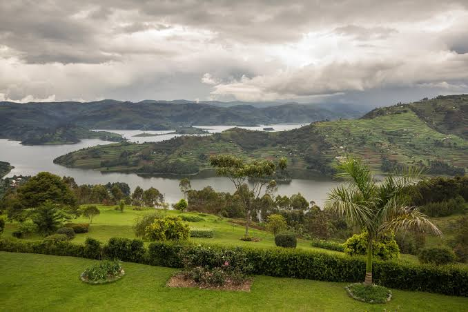
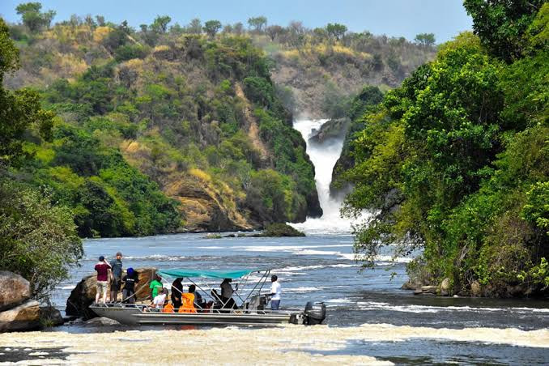
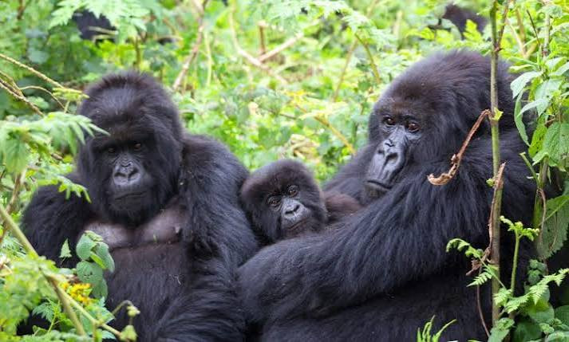

Research and credits
References
These official websites are useful starting points for checking tourism and protected-area information. Confirm details and add the original source for any photographs you replace the included illustrations with.
Tourism Information
- Uganda Tourism Board. Uganda Tourism Board.
- Uganda Tourism Board. Explore Uganda: The Pearl of Africa.
Wildlife and National Parks
- Uganda Wildlife Authority. Uganda National Parks.
- Uganda Wildlife Authority. About Uganda Wildlife Authority.
Included Image Assets

Uganda 
Murchison Falls 
Bwindi Forest